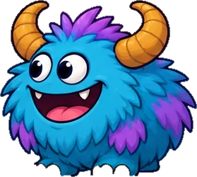
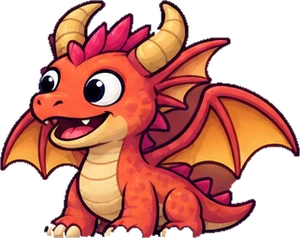

2D vector test: two monsters
Fuzzhorn and Emberwing redrawn the way the hero is drawn: simple rounded shapes, soft gradients, thin dark outline, side view facing the hero. Their eyes follow the hero and blink, and every few seconds they attack.
Fuzzhorn
Waddles in place, crouches, then charges with its horns.

Current (restyled art)New 2D vector
Emberwing
Flaps its wings and swishes its tail, rears back, then breathes fire.

Current (restyled art)New 2D vector